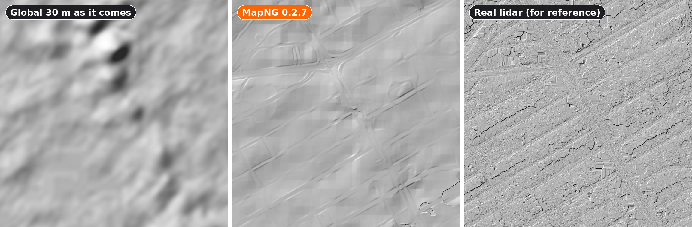
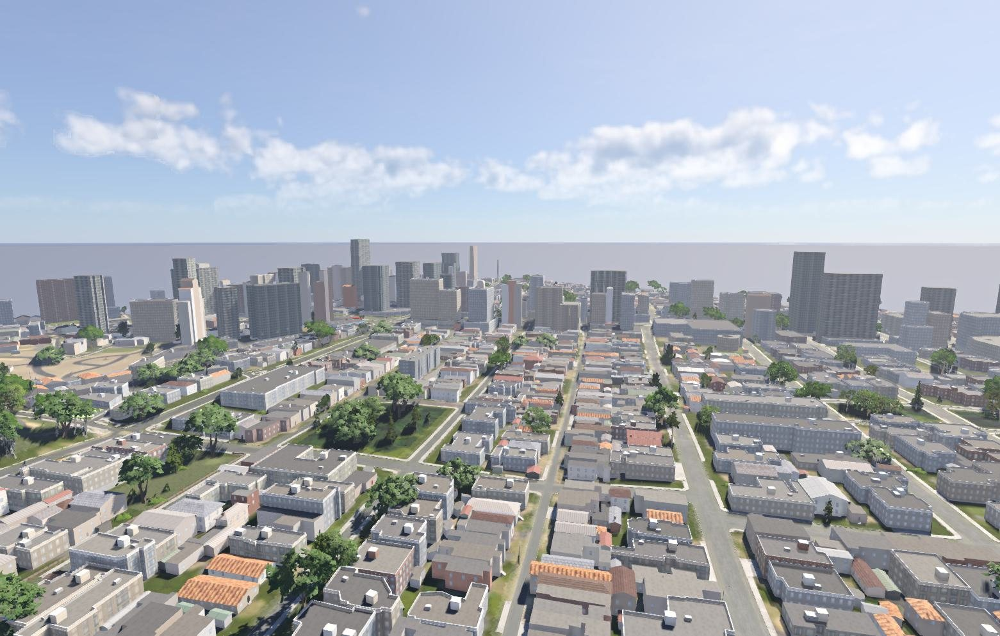
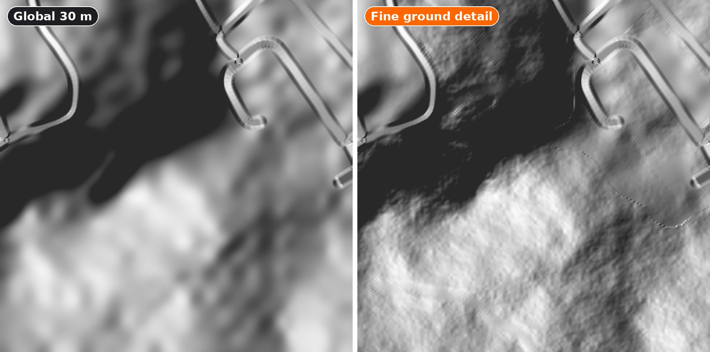
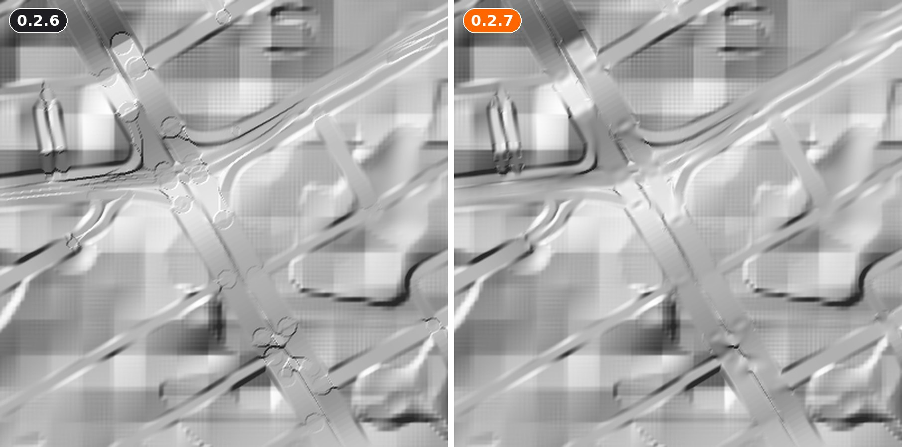
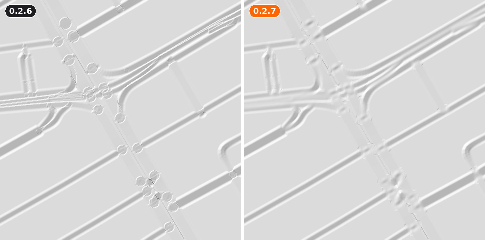
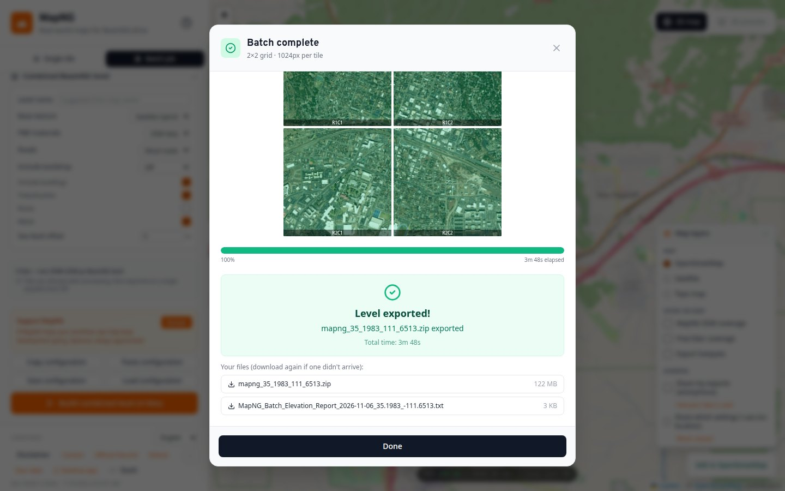

MapNG
MapNGWhere a national lidar survey exists, MapNG has used it by default since 0.2.6. Everywhere else it falls back to a 30 m global dataset, and that data has two problems: it's soft, and in cities it measures the tops of buildings and trees rather than the ground. 0.2.7 is about making those levels good. This time the page also shows a few images from behind the scenes: the heightmaps MapNG makes, drawn as hillshades, before and after.
🏙️ The ground under cities

The free global data comes from radar flown from space, and radar bounces off roofs and treetops. In a dense city that means hills that are really blocks of towers, and streets that climb onto them. MapNG now finds the real ground first:
- It compares the 30 m data with GEDTM30, a global bare-earth model, and with OpenStreetMap's buildings, woods and viaducts, and lowers what stands above the ground.
- Where both are radar, it also averages in Copernicus GLO-30, a second, independent survey, so their errors partly cancel.
- Only the global 30 m gets this. Lidar, GPXZ, USGS and your own uploads are left exactly as they are.
| Average error against lidar, cities with a survey to check (lower is better) | On roads | Bare ground | Under bridges |
|---|---|---|---|
| Global 30 m as it comes | 7.8 m | 5.1 m | 7.5 m |
| MapNG 0.2.7 | 4.8 m | 3.1 m | 4.2 m |

🌿 Fine ground detail

30 m data has nothing smaller than a few tens of metres, so every slope comes out like a sheet of plastic. When a level is built from it, MapNG now adds small relief that depends on what covers the ground:
- about half a metre in woods and scrub, less on grass, almost nothing in fields, more on bare rock and steep slopes
- none on roads, railways, buildings, water, car parks or sports pitches, fading out towards them
- the same place always gets the same ground, so batch tiles meet without seams
It changes only the BeamNG level. The heightmap and GeoTIFF downloads stay the real data. It's on by default, with a switch under Advanced → terrain edits.
🧗 Cliffs that are cliffs
Behind the scenes: ground height across a mapped cliff on Table Mountain, Cape Town, sampled from both heightmaps. Hover or tap for heights.
At 30 m, a cliff smears into a long ramp. Where OpenStreetMap maps a cliff as a line (and many famous ones are), MapNG now turns that ramp back into a cliff: the top stays level right up to the mapped edge, a steep face drops just past it, and bare rock is painted where the face is steeper than 45°. It's only applied where the data really does drop on the mapped side, and it fades out where a road or path crosses the cliff.
🛣️ No more rings at junctions

Road smoothing ended each piece of road with a flat, round end at that point's height. Where the road carried on uphill past a junction, or changed its number of lanes, that flat disc sat on a road that kept climbing, and its edge showed as a ring. Now the road carries straight on past the junction and fades out. Where two roads still meet at slightly different heights, the join is smoothed over a couple of metres. Real steps, like a frontage road on a terrace beside a highway, stay steps.

🧩 Combined levels you can't lose

A combined level is one big level stitched from a grid of tiles. At the end of a long job, the browser could block its download, or ask "download multiple files?" and lose it if you answered late, leaving only the small elevation report. Now:
- the level downloads first, before the other files
- the finished window lists every file with a Download button, until you start the next job
- if the level can't be built, the window says so plainly, with the reason and what to try
- in the desktop app, combined levels go straight into your BeamNG mods folder, like single levels, and aren't limited by the window's memory
🧹 Smaller changes
🙏 Thanks
The bare-earth reference is GEDTM30 by OpenGeoHub (CC-BY 4.0). The second radar survey is Copernicus GLO-30 (© DLR e.V. 2010–2014 and © Airbus Defence and Space GmbH 2014–2018, provided under COPERNICUS by the European Union and ESA), served through Mapterhorn. Thanks also to the Discord members whose São Paulo report started all of this.
Heads-up: the Windows build still isn't code-signed. If SmartScreen warns you, choose More info, then Run anyway.
Try a city or a cliff you know with no lidar and tell me what you see. Post in the MapNG Discord or open a GitHub issue. 🧡